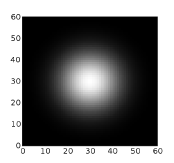
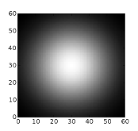
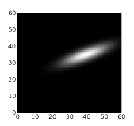
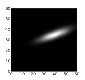

Generating patterns¶
Topographica provides comprehensive support for creating two-dimensional patterns of various sorts. These patterns can be used for generating training or testing inputs, generating initial or fixed weight patterns, neighborhood kernels, or any similar application. Pattern support is provided by the ImaGen package, which was developed alongside Topographica but is completely independent and usable for any simulator.
Simple patterns¶
The basic types of patterns supported by Topographica include:
These patterns are created using objects of type PatternGenerator, which is an object that will return a 2D pattern when it is called as a function. For instance, the Gaussian PatternGenerator will return Gaussian-shaped patterns:
$ topographica -g
Topographica> from topo import pattern
Topographica> pg=pattern.Gaussian(xdensity=60,ydensity=60,size=0.3,aspect_ratio=1.0)
Topographica>
Topographica> matrixplot(pg())
Topographica> matrixplot(pg(size=0.5))

As you can see, the parameters of a PatternGenerator can be set up when you create the object, or they can be supplied when you generate the pattern. Any parameter not supplied in either location inherits the default value set for it in that PatternGenerator class.
The reason for the name PatternGenerator is that the objects can each actually return an infinite number of different patterns, if any of the parameters are set to Dynamic values. For instance, a Gaussian input pattern can be specified to have a random orientation and (x,y) location:
$ topographica -g
Topographica> from topo import pattern, numbergen
Topographica> input_pattern = pattern.Gaussian(size=0.08, aspect_ratio=4,
xdensity=60,ydensity=60,
x=numbergen.UniformRandom(lbound=-0.5,ubound=0.5,seed=12),
y=numbergen.UniformRandom(lbound=-0.5,ubound=0.5,seed=34),
orientation=numbergen.UniformRandom(lbound=-pi,ubound=pi,seed=56))
Topographica> matrixplot(input_pattern())
Topographica> topo.sim.run(1.0)
Topographica> matrixplot(input_pattern())
 

There are many other types of patterns available already defined in the topo/pattern directory, and adding new patterns is straightforward. Just create a new class inheriting from PatternGenerator or one of its subclasses, make sure it is loaded before you start the GUI, and it will then show up in the Test Pattern window of the GUI automatically, and can be used in scripts the same way.
Composite patterns¶
Often, rather than writing a new PatternGenerator class, you can combine existing PatternGenerators to make a new pattern. To do this, Topographica provides the special Composite PatternGenerator, which accepts a list of other PatternGenerators and an operator for combining them. For instance, you can make connection weights be random but with a Gaussian falloff in strength by setting:
CFProjection.weights_generator=pattern.Composite(
generators=[pattern.random.UniformRandom(),
pattern.Gaussian(aspect_ratio=1.0,size=0.2)],
operator=numpy.multiply)
More complex patterns can be created by combining multiple Composite PatternGenerators:
$ topographica -g
Topographica> from topo import pattern
Topographica> import numpy
Topographica> surroundsine = pattern.SineGrating(frequency=8.0,orientation=0.25*pi,
Topographica> phase=3*pi/2)
Topographica> centersine = pattern.SineGrating(frequency=8.0,orientation=0.60*pi)
Topographica> centerdisk = pattern.Disk(aspect_ratio=1.0, size=0.35, smoothing=0.005)
Topographica> surrounddisk = pattern.Disk(aspect_ratio=1.0, size=0.90, smoothing=0.005)
Topographica> surroundring = pattern.Composite(generators=[surrounddisk,centerdisk],
Topographica> operator=numpy.subtract)
Topographica> center = pattern.Composite(generators=[centersine,centerdisk],
Topographica> operator=numpy.multiply)
Topographica> surround = pattern.Composite(generators=[surroundsine,surroundring],
Topographica> operator=numpy.multiply)
Topographica> centersurround = pattern.Composite(generators=[center,surround],
Topographica> operator=numpy.add,
Topographica> xdensity=160,ydensity=160)
Topographica> matrixplot(centersurround())

Once created, even very complex composite patterns can be scaled, rotated, and placed together as a unit:
$ topographica -g
Topographica> from topo import pattern
Topographica> import numpy
Topographica> pattern.Disk.smoothing=0.005
Topographica> lefteye= pattern.Disk(aspect_ratio=0.7, x=0.04, y=0.10, size=0.08, scale=1.00)
Topographica> leftpupil = pattern.Disk(aspect_ratio=1.0, x=0.03, y=0.08, size=0.04, scale=-1.6)
Topographica> righteye = pattern.Disk(aspect_ratio=0.7, x=0.04, y=-0.1, size=0.08, scale=1.00)
Topographica> rightpupil = pattern.Disk(aspect_ratio=1.0, x=0.03, y=-0.08,size=0.04, scale=-1.6)
Topographica> nose = pattern.Gaussian(aspect_ratio=0.8, x=-0.1, y=0.00, size=0.04, scale=-0.5)
Topographica> mouth = pattern.Gaussian(aspect_ratio=0.8, x=-0.2, y=0.00, size=0.06, scale=-0.8)
Topographica> head = pattern.Disk(aspect_ratio=1.5, x=-0.02,y=0.00, size=0.40, scale=0.70)
Topographica> pg=pattern.Composite(generators=[lefteye,leftpupil,righteye,rightpupil,nose,mouth,head],
Topographica> operator=numpy.add,xdensity=160,ydensity=160)
Topographica> matrixplot(pg(orientation=pi/1.8, x=0.2, y=0.1, offset=0.5, size=0.75))

A wide variety of operators are provided for combining the patterns; see the Composite parameter “operator” for more details.
Selector patterns¶
Instead of combining the patterns, it can also be useful to choose one from a set of different patterns, such as choosing randomly from a database of natural images. This can be done with the Selector PatternGenerator. As a contrived example, weights can be choosen at random from a set of four different pattern generators:
CFProjection.weights_generator=pattern.Selector(generators=[
pattern.Gaussian(orientation=numbergen.UniformRandom(lbound=-pi,ubound=pi,seed=99)),
pattern.Gaussian(aspect_ratio=1.0,
x=numbergen.UniformRandom(lbound=-0.2,ubound=0.2,seed=12),
y=numbergen.UniformRandom(lbound=-0.2,ubound=0.2,seed=34)),
pattern.Rectangle(orientation=numbergen.UniformRandom(lbound=-pi,ubound=pi,seed=99),
size=0.3),
pattern.Disk(size=0.2)])